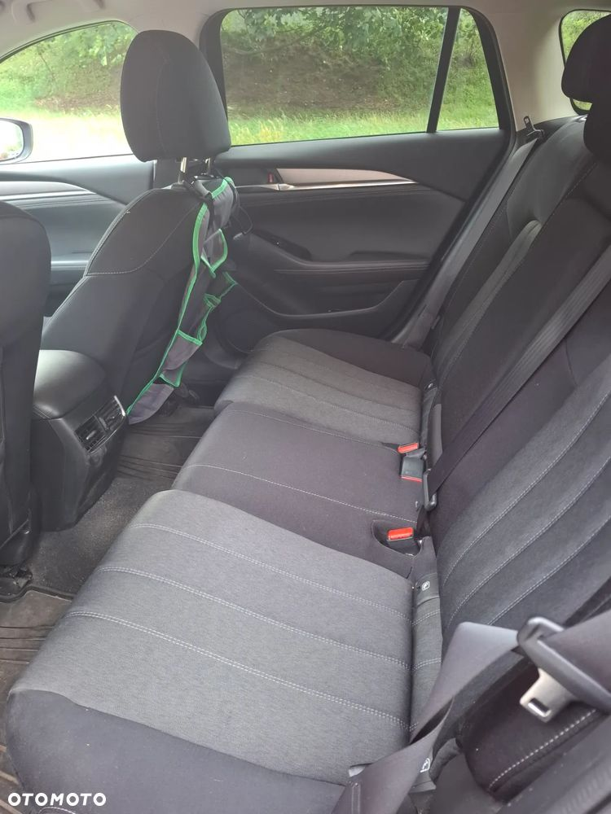

Auto kupione w Austrii, w salonie Mazdy Rainer w Wiedniu. Pierwsza rejestracja w styczniu 2020.
Sprowadzone do Polski jako mienie dyplomatyczne. Od 2021 regularnie serwisowane w Mazda Bołtowicz w Warszawie. Pierwszy wlasciciel. Bezwypadkowy. Przeglad wazny do stycznia 2026.
Wyposazenie:
- czujniki parkowania (przód i tył)
- kamera 360
- elektroniczny asystent hamowania
- DSC - system stabilizacji toru jazdy
- TSC - system kontroli trakcji
- ABS
- wyswietlacz Head up Display na przedniej szybie
- klimatyzacja dwustrefowa
- elektroniczna regulacja szyb (przód i tył)
- elektronicznie regulowane/składane lusterka boczne
- poduszki powietrzne przednie i boczne
- system nagłosnienia BOSE
- bluetooth
- nawigacja
- dywaniki gumowe + gumowa wysciolka bagaznika (latwe czyszczenie)
- immobilizer (zamontowany w salonie Mazda Bołtowicz)
- podlokietnik tylny z uchwytem na napoje oraz portami USB do ladowania
- podlokietnik przedni z portami USB do ladowania
- system I-stop
- czujniki cisnienia w oponach
- pogrzewana kierownica
- podgrzewane fotele przednie
- aktywny tempomat
- wyświetlacz centralny 7-calowy ze sterowaniem dotykowy
- system Apple CarPlay/Android Auto
- isofix
- 19-calowe felgi aluminiowe
Do auta dolaczony jest komplet opon zimowych Semperit Speed Grip 3 wraz z 17-calowymi felgami.
Uwaga: lekko przytarty lewy tylny blotnik (widoczne na zdjeciu).
